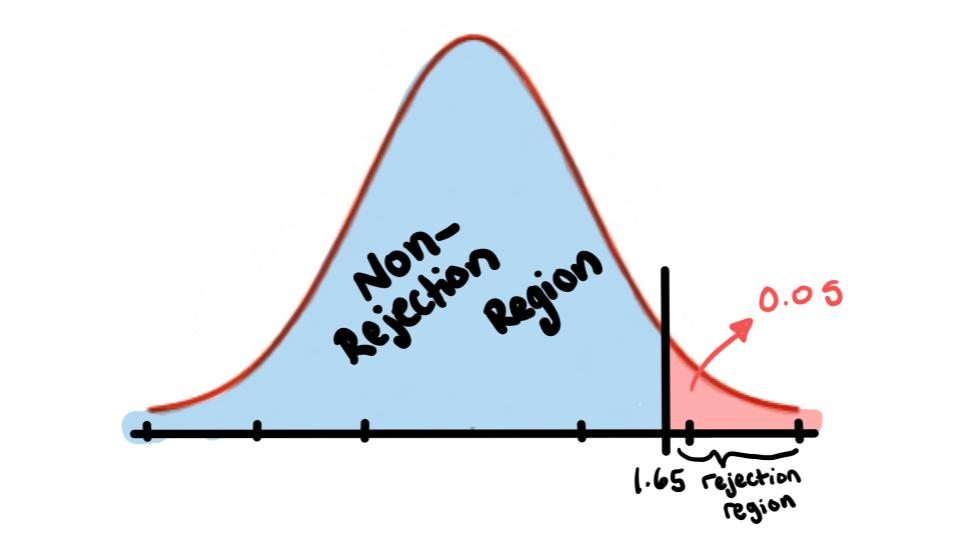
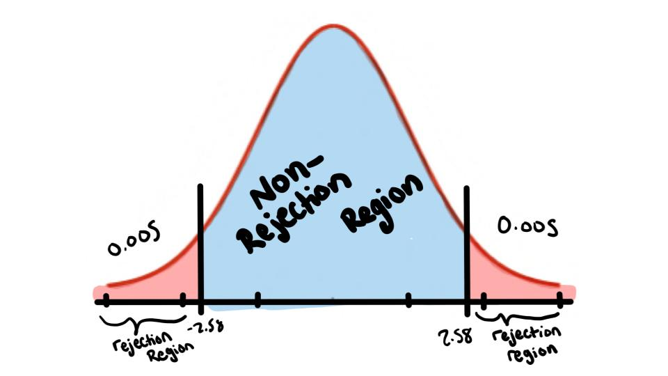
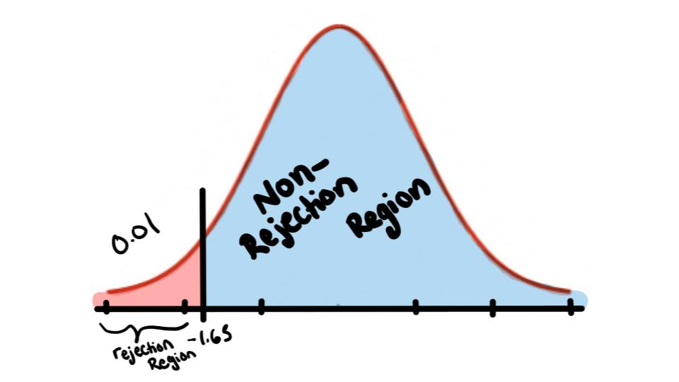

z-test
EXAMPLE
A researcher believes that the mean age of medical doctors in a large hospital system is older than the average age of doctors in the United States, which is 46. Assume the population standard deviation is 4.2 years. A random sample of 30 doctors from the system is seleted, and the mean age of the sample is 48.6. Test the claim at \(\alpha=0.05\).
Step 1:
Write the Hypothesis
\[H_0: \mu=46\;\;\;\;\;\;\;\;\; H_1:\mu>46 \text{ (claim)}\]
So we are doing a right tailed test
Step 2:
Now since \(\sigma\) is known we can look at the z-table to find \(Z_{\alpha}=1.65\)

Step 3:
Now we calculate the test value
\[\text{Test Value}=\frac{48.6-46}{\frac{42}{\sqrt{30}}}=3.39\]
Step 4:
Note
\[3.39>1.65\]
hence we reject the \(H_0\)
Step 5:
Conclusion
There is enough evidence to support the claim.
The Medical Rehabilitation Education Foundation reports that the average cost of rehabilitation for stroke victims is $24,672. To see if the average cost of rehabilitation is different at a particular hospital, a researcher selects a random sample of 35 stroke victims at the hospital and finds that the average cost of their rehabilitation is $26,343. The standard deviation of the population is $3251. At \(\alpha=0.01\), can it be concluded that the average cost of stroke rehabilitation at a particular hospital is different from $24,672?
Step 1:
Write the hypothesis
\[H_0:\mu=24672\;\;\;\;\;\;\;\;\;\;\; H_1:\mu\neq24672 \text{ (claim)}\]
So we have a two-tailed test
Step 2:
Since the population standard deviation is know we look in the z-table for the boundary values \(Z_{\frac{\alpha}{2}}=\pm 2.58\)

Step 3:
Calculate the test value
\[\text{Test Value}=\frac{26343-24672}{\frac{3251}{\sqrt{35}}}\]
Step 4:
Note
\[3.04>2.58\]
So we reject the \(H_0\)
Step 5:
Conclusion
There is enough evidence to support the claim.
An obstetrician read that a newborn baby loses on average 7 ounces in the first two days of his or her life. He feels that in the hospital where he works, the average weight loss of a newborn baby is less than 7 ounces. A random sample of 32 newborn babies has a mean weight loss of 6.5 ounces. The population standard deviation is 1.8 ounces. Is there enough evidence at \(\alpha=0.01\).
Step 1:
Write the hypothesis
\[H_0:\mu=7\;\;\;\;\;\;\;\;\;\; H_1:\mu<7 \text{ (claim)}\]
So we have a left tailed test.
Step 2:
Since we know the population standard deviation we use our z-table to find \(Z_{\alpha}=-1.65\)

Step 3:
Calculate the test value
\[\text{Test Value}=\frac{6.5-7}{\frac{1.8}{\sqrt{32}}}=-1.57\]
Step 4:
Note
\[-1.57>-1.65\]
So we fail to reject the \(H_0\)
Step 5:
Conclusion
There is not enough evidence to support the claim.